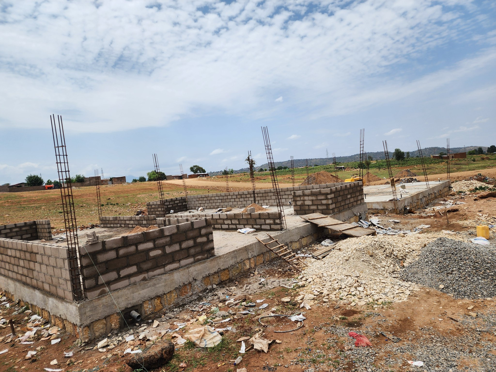
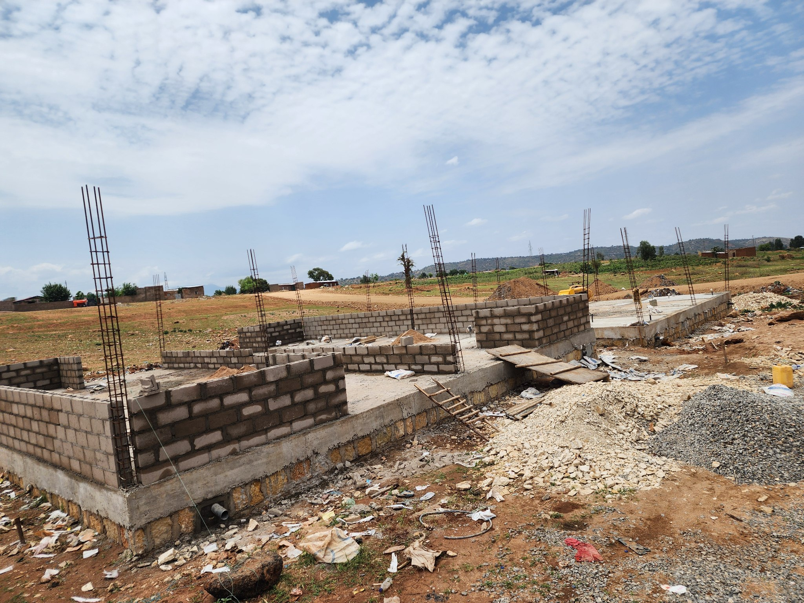

The Pro Poor Housing Project began in April 2025 and is expected to be completed by August 2025. Spanning approximately 1,140 square meters, the project consists of two housing blocks, each containing 4 residential units — a total of 8 houses. These houses are specifically being built for individuals displaced by the Corridor Development initiative. As of now, the project has reached approximately 40% completion. It operates with an average workforce of 22 workers and is backed by a budget of 15 million ETB.
 
